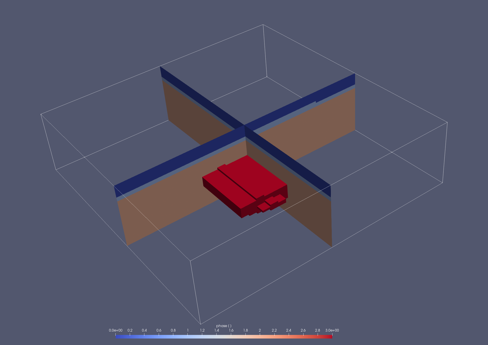

3.3 Using 3D setups created in geomIO
Setups that were created in geomIO (https://bitbucket.org/geomio/geomio/src/master/) can easily be used as input geometries for LaMEM. If the options opt.getPolygons and opt.writePolygons are enabled in the geomIO file, a file named Polygons.bin will be created in the geomIO output directory.
geomIO.m:
% settings
inputFile = ['Simple.EW.svg'];
opt = geomIO_Options();
opt.inputDir = ['./Input'];
opt.outputDir = ['./Output'];
opt.inputFileName = inputFile;
opt.LaMEMinputFileName ='Simple.dat';
opt.readLaMEM = true;
opt.writeParaview = true;
opt.writePolygons = true;
opt.interp = true;
opt.zi = [0:5:200];
opt.getPolygons= true;
opt.gravity.lenUnit = 'm';
% Density assignment
paths = {
'Air', 0, 0
'Sediments', 2500, 1
'Crust', 2700, 2
'Magma', 2400, 3
};
opt.pathNames = {paths{:,1}};
opt.gravity.drho = [paths{:,2}];
opt.phase = [paths{:,3}];
% Run geomIO
[PathCoord,Volumes,opt] = run_geomIO(opt,'default');Note that the polygon file depends on the number of elements and markers in each directions, so it is wise to label them accordingly. Also Note that the polygons in the .svg file should overlap to avoid voids in the geometry. They will later overwrite each other in the order specified in geomIO.m.
Simple.dat:
In the LaMEM input file, set:
msetup = polygons
poly_file = ./Output/Simple_32x32x32.bin